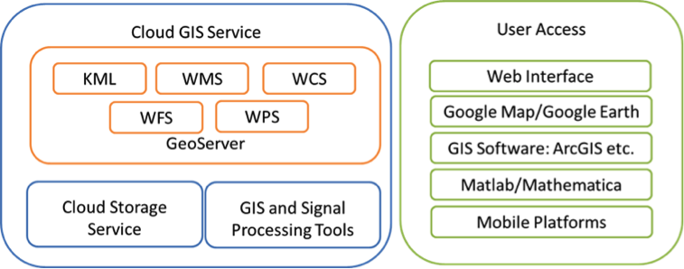
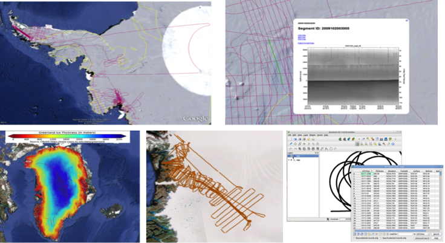

Cloud GIS Service
Polar Grid cloud-GIS Service is aimed to bring advanced geo-spatial data access and high-level analysis functions to PolarGrid data processing pipeline. Besides the simple geo-spatial data distribution, the service has following technical highlights:
- Data distribution service: produce more standards-compliant GIS products for different types of user groups with multiple service protocols, such as KML, WMS (Web Map Service), WFS (Web Feature Service) and WCS (Web Coverage Service). It also includes the special service as virtual appliance for PolarGrid field crew who has limited computing resource and internet connection
- Software as a Service: make complex GIS processing and analyses tools more accessible to Matlab and other software packages used in PolarGrid.
- Infrastructure as a Service: provide system sustainability and reusability for related projects, such as 3D visualization service and other high-level data analysis projects.

